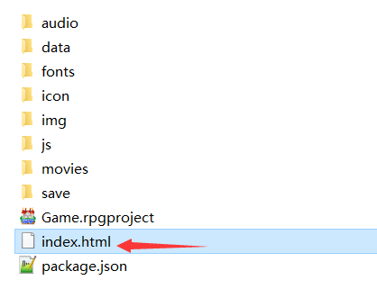
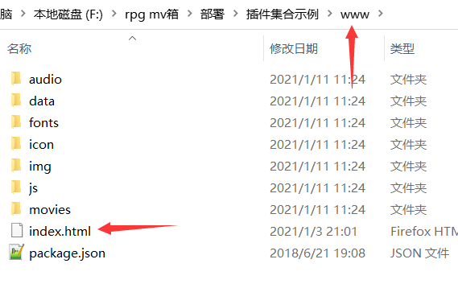
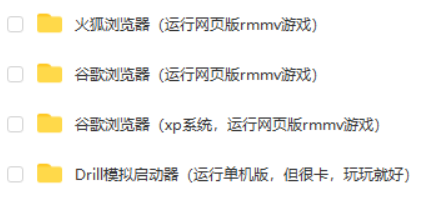
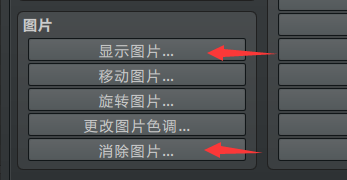
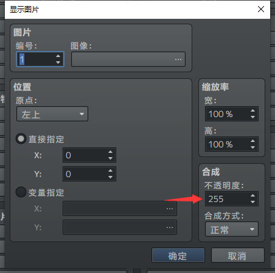
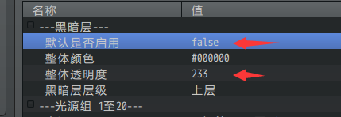
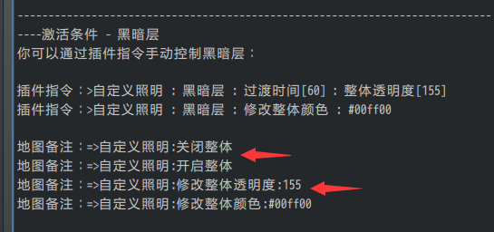

概述
定义
透明度/不透明度：在rmmv中，"不透明度"和"透明度"的意思一样。只要有"透明度"三个字，就都是统一的：255完全不透明，0完全透明。
（从脚本层面上，"不透明度"的英文为opacity，但是用中文解释非常绕，索性全部理解为"透明度"。）
常见坑
当你操作任何贴图时，都会遇到两种操作方法：
显示/不显示，
透明度255/透明度0。
道理简单，但坑就在于：
不显示是看不见图片的，
透明度0也是看不见图片的，
显示的透明度0也是看不见图片的，
不显示的透明度255也是看不见图片的，
不显示的透明度0更加是看不见图片的。
只要看不见图片，就很容易误认为没有生效。所以你必须留意显示与透明度的关系。
关系
显示、透明度与看见关系如下表：
显示 不显示
透明度0 看不见 看不见
透明度40 几乎看不见 看不见
透明度215 能看见 看不见
透明度255 能看见 看不见
另外，看不见也可能包含其他因素，具体情况需要具体分析：
1.空图片，也是看不见的。
2.直接给透明图片，也是看不见的。
3.图片超出了窗口范围，也是看不见的。
Rmmv功能
行走图操作
下图为移动路线中控制的三种情况，透明状态对应 显示/不显示：
{width="4.625in" height="2.971887576552931in"}
玩家的 显示/不显示 可以直接修改，也可以在移动路线中修改：
{width="4.832729658792651in" height="1.4060739282589676in"}
{width="2.7079943132108486in" height="1.1769356955380577in"}
图片操作
图片的功能比行走图要好理解，图片的 显示/不显示 直接对应下面两条指令。
{width="3.1875in" height="1.653459098862642in"}
你必须点开显示才能控制透明度，而不是并列控制的。
{width="3.6201859142607176in" height="3.6041666666666665in"}
插件
自定义照明 - 黑暗层
Drill_LayerIllumination 地图 - 自定义照明效果
自定义照明是在地图的基础上加上一层黑暗层。把上面的表挪用下来，你会发现：
开启 关闭
黑暗层透明度0 看不见黑暗 看不见黑暗
黑暗层透明度40 几乎看不见黑暗 看不见黑暗
黑暗层透明度215 能看见黑暗 看不见黑暗
黑暗层透明度255 能看见黑暗 看不见黑暗
黑暗层的开关（显示/不显示）在这里是以地图为准的，一张地图一个开关。默认启用是一次性对所有地图的，而备注是一对一的。也就是说，如果默认是关闭的，你需要加地图备注来开启黑暗层，不然就看不见黑暗。
{width="4.15625in" height="1.4338582677165355in"}
{width="5.145833333333333in" height="2.4171259842519683in"}
显现动作/消失动作
Drill_EventFadeOutEffect 行走图 -- 消失动作效果
Drill_EventFadeInEffect 行走图 -- 显现动作效果
Drill_PictureFadeOutEffect 图片 -- 消失动作效果
Drill_PictureFadeInEffect 图片 -- 显现动作效果
显现动作固定为：从 完全透明 到 完全不透明 的过程。动作结束后，对象的透明度将变为255。
消失动作固定为：从 完全不透明 到 完全透明 的过程。动作结束后，对象的透明度将变为0。
这类插件只控制对象的透明度，并不控制 显示/不显示。如果你让某个事件播放动作，事件没有透明过程直接消失了，那么可以确定是其他插件造成的问题，而不是该插件。
倒影镜像/同步镜像
Drill_LayerReverseReflection 行走图 - 图块倒影镜像
Drill_LayerSynchronizedReflection 行走图 - 图块同步镜像
镜像分为 镜面和镜像。镜面是 显示/不显示 的一个重要因素，如果没有镜面，镜像当然不会存在。每张地图会有默认的镜面，你也可以配置自己画的镜面资源图片。
镜像中还有个概念，\"镜像透明同步\"。是指：
镜像透明度 随着 事件透明度 变化而变化。
镜像透明状态 随着 事件透明状态 变化而变化。
也就是说，如果关闭透明同步，镜像和事件贴图的两个属性（显示/不显示 和 透明度）会单独作用。单独作用时，关系如下：
+------------+-------------------------------+-------------------------+ | | 显示/不显示 控制 | 透明度 控制 | +============+===============================+=========================+ | 镜像 | 处于无镜面区/处于镜面区 | 无 | | | | | | | 不反射镜像/开启反射镜像 | | +------------+-------------------------------+-------------------------+ | 事件贴图 | 事件透明状态 | 事件透明度 | +------------+-------------------------------+-------------------------+
关闭同步后，你可以设置 透明度为0 或 开启透明状态 的事件，使得事件具有镜像却看不见本体。
需要注意的是，你不能修改镜像的透明度。
小结
上述的插件介绍，只是对于部分具体插件的解析。其它的插件也具有相似的功能，不过称呼命名方式会有部分区别。所以这里只能是抛砖引玉，让你留意部分小坑。
在你使用插件时，建议下意识地去分析：是不是开关没开、是不是透明度没有255，另外，考虑一下是不是图片之间相互遮挡了，图片是不是超出窗口范围看不见。